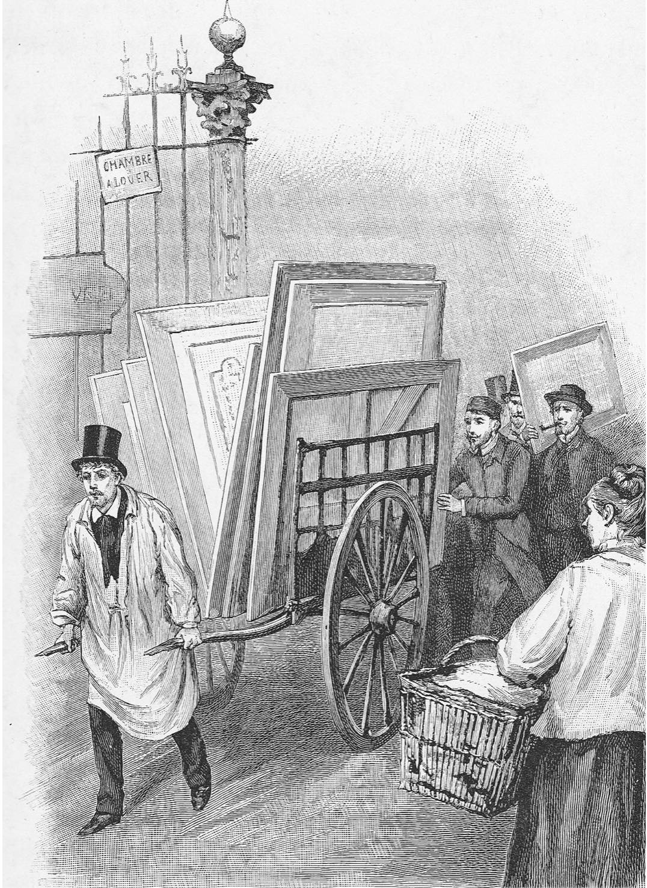
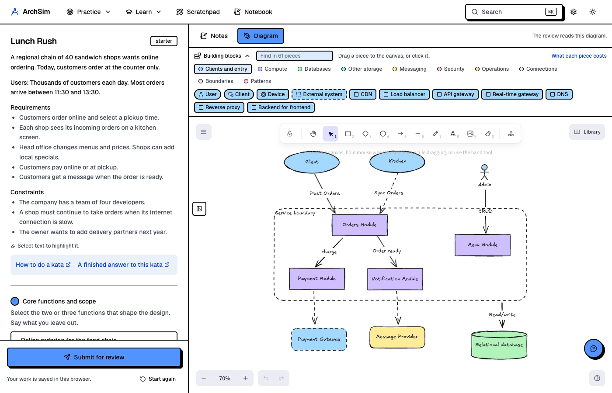
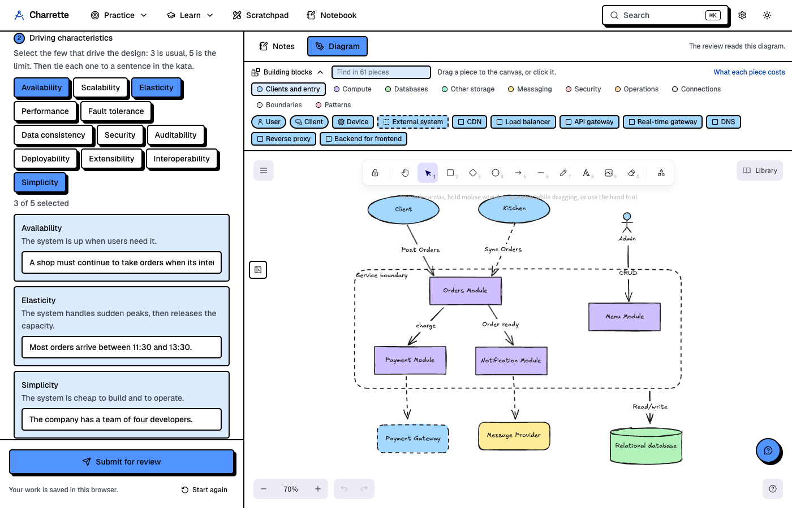
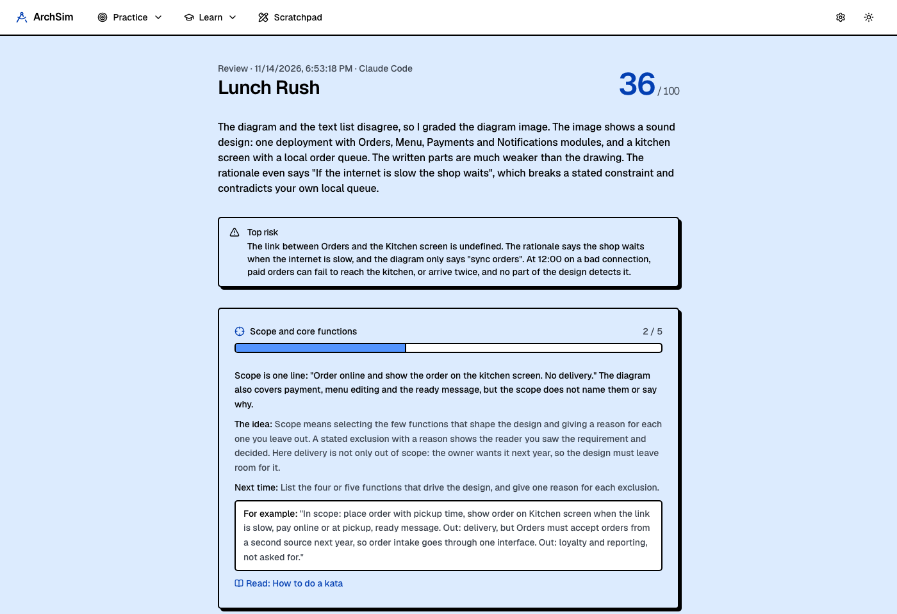
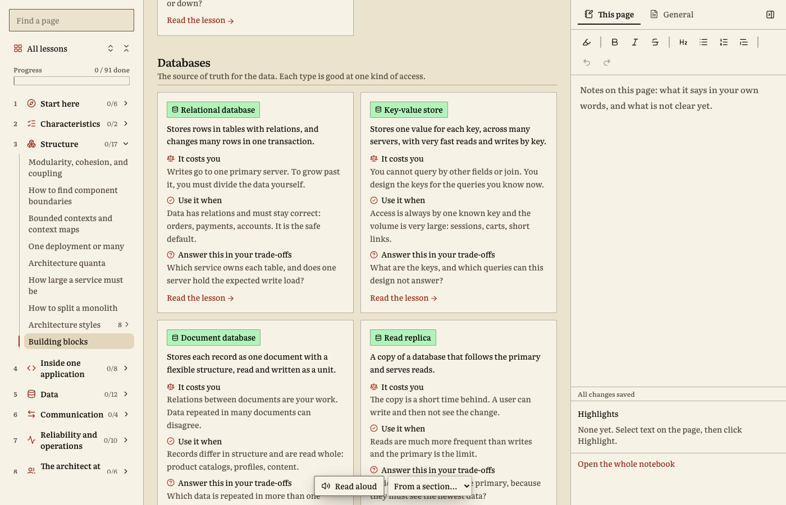
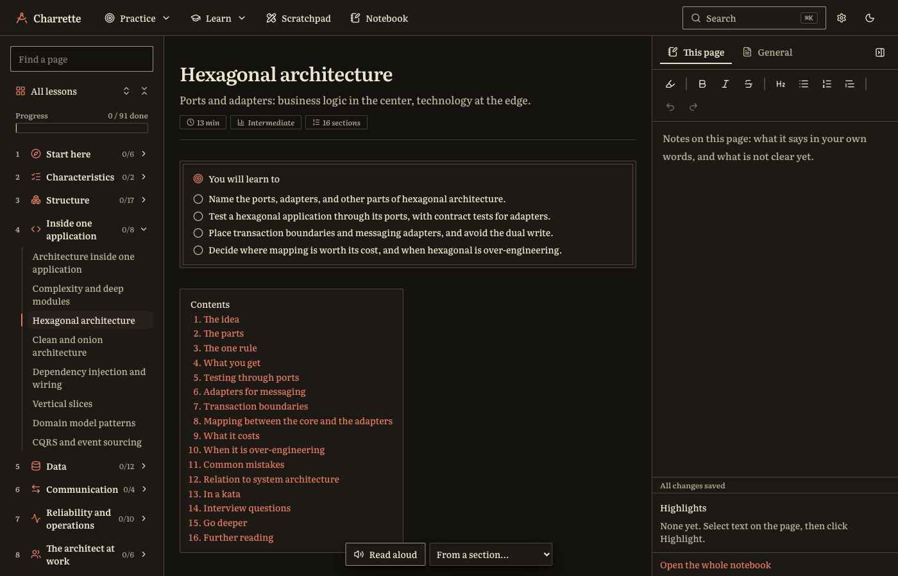
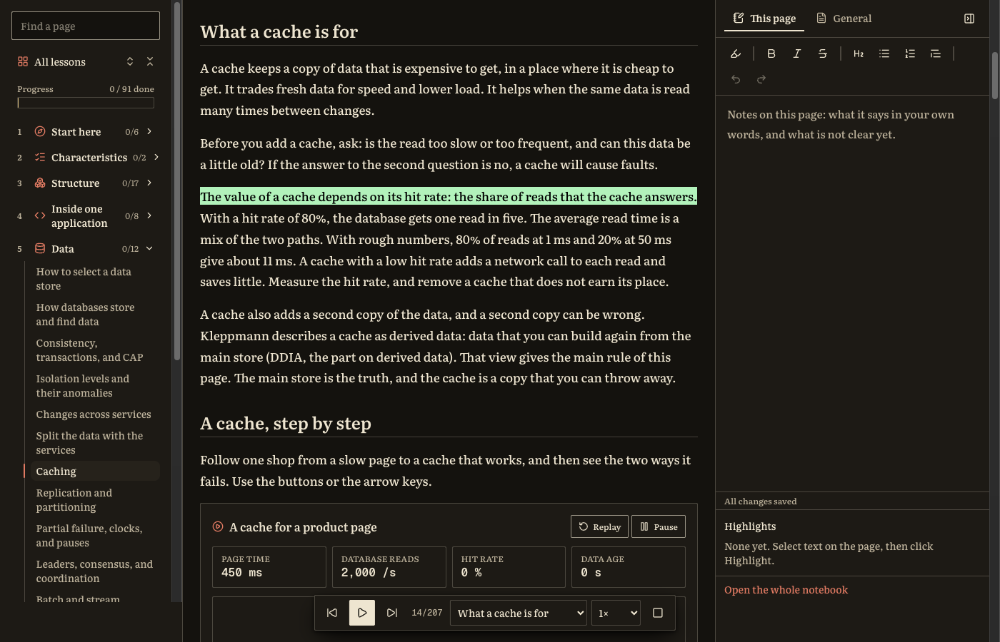

charrette /ʃəˈrɛt/, noun. A short, intense design session that ends in a critique.
Draw it. Defend it. Face the crit.
Take a short business problem, draw a design, and explain your trade-offs. An AI critic reads your diagram and grades how well you reasoned, in about a minute.
Free for personal and noncommercial use. It runs on your computer, with the AI provider you have.

The code is getting cheaper. The decisions are not.
AI tools now write a large part of the code. The decisions that stay with people are the expensive ones: how a system is divided, where its data lives, how its parts talk, and which qualities it must have.
Those decisions are architecture, and they are hard to practice. You can attempt a design alone, but nobody tells you where your reasoning is weak. Charrette does.
The ritual
Charrette is French for "cart". The best-known story comes from 19th-century Paris: architecture students drew until a cart came to collect their work at the deadline. The word now means a short, intense design session. Each kata in the app follows the same three steps.
The plates below are the app itself. Point at a plate to see it in its real colors.
-

One module takes every order. What breaks at 12:30?
Draw it
Read a short business problem. Set the scope, and draw the design on a canvas with 48 standard pieces: services, queues, stores, and the boundaries around them.
-

Defend it
Select the few characteristics that drive the design, and tie each one to a sentence of the problem. Choose a style. Say what your design gives up, and where it fails first.
-

Face the crit
The critic scores seven dimensions from 1 to 5. It quotes your own work as the evidence, names the top risk, and asks the questions that a review board asks.
One kata, five steps, one review
-
Set the scope
Name the few functions that shape the design, and what you leave out.
-
Select the characteristics
Pick the qualities that drive this problem, usually three. Tie each one to the text.
-
Select a style
Choose the simplest architecture style that supports them.
-
Draw the diagram
Use the Excalidraw canvas, with a palette of standard pieces to drag in.
-
State the trade-offs
Say what your design gives up, and where it fails first.
A crit that shows its evidence
- Seven dimensions, each scored from 1 to 5.
- A quote from your own diagram or text for each score.
- One concrete change to make next time, for each dimension.
- The top risk in your design.
- The questions a review board would ask you.
Every architecture is a set of trade-offs. The critic grades the quality of your reasoning against the problem. It does not compare your design with a reference solution. There is no single correct answer to a kata.

The pieces of a design, and what each one costs
- 48 standard components in seven groups, from load balancer and cache to event stream and secrets store.
- The usual notation: a cylinder for stored data, a pipe for messages, a dashed line for a message that nobody waits for.
- Boundaries for a deployment, a region, or a trust zone, and small patterns that come with their arrows.
- A card for each piece, with its cost and the question a reviewer asks about it.
Built for practice
- Katas and interview questions
- From a sandwich chain to a ticket seller with two million buyers, plus the classic system design questions.
- A tutor, not an answer key
- A help chat next to the canvas explains concepts and asks about the pieces you used. In a kata, it does not hand you the design.
- Highlights and a notepad
- Mark the sentences that matter, and think in a private notepad.
- Solve your own problem
- Paste any problem, for example an interview question you had, and get a worked answer with a diagram.
- Scratchpad
- Free boards for designs that are not katas, with the full canvas and notepad.
- Nothing is lost
- Your answers, notes, and diagram are saved as you work. The home page lists the katas in progress.
A course for the concepts you meet
- 96 lessons in eleven sections: trade-offs, structure, styles, data, communication, reliability, teams, product decisions, and AI systems. Each one has a level, a reading time, and objectives.
- A sidebar for the whole course, with your progress in each section. The notebook sits on the other side of the lesson.
- Product and decisions: who decides, the RACI matrix, prioritization with MoSCoW, RICE, and cost of delay, and product thinking.
- AI systems: the model as one part of the system, agents and tools, evaluation with LLM-as-judge, token cost and latency budgets, and voice agents.
- 22 system design cases, and walkthroughs that explain one diagram in steps.
- A glossary of 347 terms in plain words, and a cheatsheet for each section.


Study the way that works for you
- Read aloud: a voice reads the lesson and highlights each sentence, so your eyes follow along. Start at any paragraph or section. Use the browser voices, or natural Google Cloud voices.
- Search everything with Cmd+K: lessons, cases, terms, questions, and your notes.
- Highlights and a notebook: mark a passage, add a note, and find it all again.
- Progress: mark each lesson as done, and see what is left.
Get ready for the interview
- Practice under time
- A 45-minute clock in the kata shows the phase an interviewer expects now: clarify, a first design end to end, deep dives, and the wrap-up.
- Question drill
- 472 interview questions from the lessons. Write your answer, and the model grades it against the lesson.
- Product drill
- Estimate what a feature costs, prove that it works, say who pays, and rank the work. The model does your arithmetic again.
- Vocabulary drill
- Explain each term in your own words. Spaced repetition brings back the terms you missed.
- Behavioral stories
- Keep true work stories in a story bank, tag them with competencies, and see which ones have no story yet.
- AI system design
- Design a voice support agent or insights from sales calls, with lessons on agents, evaluation, token cost, and latency.
Works with the AI provider you already have
The critic, the tutor chat, and the worked answers use one connection that you select in Settings. No provider is required by the design.
| Mode | What it uses | API key in the app |
|---|---|---|
| Claude Code | The claude command and its login on your computer |
No |
| OpenCode | The opencode command and its login on your computer |
No |
| OpenCode Go | An OpenCode Go API key | Yes |
| Anthropic API | An Anthropic API key | Yes |
| OpenAI-compatible endpoint | Google Gemini, OpenRouter, OpenAI, a local Ollama model, or any provider with this API format | Yes, except for local models |
| Google Vertex AI |
Gemini, or Claude from the Model Garden, in your Google Cloud project, with the
gcloud login on your computer
|
No |
Run it
Charrette runs on your computer. You need Node.js 20.9 or later, pnpm, and one of the six connections above.
The source is available under the PolyForm Noncommercial License 1.0.0. Use it, change it, and share it for study, teaching, research, and hobby projects. A commercial use needs a separate license: open an issue to ask.
git clone https://github.com/aesbetancourt/charrette.git cd charrette pnpm install pnpm dev